User manual
1. About this manual
This manual explains how to use PHAEMA (Property Holding and Estate Management Application) for every part of a council's commercial and operational estate: the property register, leases and key dates, casework, rents and service charges, maintenance and compliance, and asset valuation. It is written for everyone who uses PHAEMA, from surveyors and finance officers to administrators.
The same text is inside PHAEMA: select Help in the menu, or Help with this page near the top of any page. Interactive training for each role is under Help, Training courses.
How it is organised. Sections 2 and 3 cover getting around. Sections 4 to 13 follow the work, one area at a time. Section 14 covers reports and data, section 15 administration, and section 16 lists common tasks by role.
Examples. Screenshots and worked examples use the fictional demonstration data for two districts, Exampleton (references DM-E and DM-S) and Northfield (DM-N). Every name, address and number in them is invented.
Optional modules. The rent ledger, service charges, maintenance, compliance and asset valuation can each be switched on or off by an administrator. If you cannot see a section described here, it is probably switched off.
Words you may not know, such as WAULT, UPRN or "contracted out", are in the glossary at the end.
2. Getting started
Signing in
Use the username and password your PHAEMA administrator gave you. If you can sign in but see a page saying you do not have access, you have not been given a role yet: ask an administrator.
You can type your email address in place of your username. This works when the address belongs to one account only.
Two-step sign-in. If your council asks for it, PHAEMA wants a 6-digit code from an authenticator app on your phone after your password. Select Two-step sign-in in the menu to set it up: scan the code shown with the app, enter the first 6-digit code, and keep the single-use recovery codes somewhere safe in case you lose the phone. Administrators are asked to set it up by default; your council can require it for everyone.
Changing your password. Select Change password in the menu. Passwords need at least 12 characters.
Forgotten your password. Select Forgotten your password? on the sign-in page and enter your email address or username. PHAEMA emails you a link to choose a new password. The link works once and for one hour, and your old password keeps working until you use it. If you use two-step sign-in, you are still asked for your code when you next sign in. If no email arrives, look in your junk folder, check you typed the address or username your sign-in uses, then ask an administrator.
Signing in with your council account. If your council has turned on single sign-on, the sign-in page has a Sign in with Microsoft button (the name may differ). Select it and sign in as you do for email. Your council's own password and security checks apply, so PHAEMA does not ask for a two-step code as well. People outside the council, such as consultants, valuers and solicitors, either sign in below the button with a PHAEMA password, or use the button if the council has given them a guest account.
Trying PHAEMA on the test site. You can follow this manual on the public test site at demo.phaema.co.uk, which holds the same fictional demonstration data as the examples here. To get a sign-in, select Request a test account on the site and give your name and email address; you will be emailed when your account is ready. Everything on the test site is reset every 48 hours, so do not enter real or personal information.
The menu
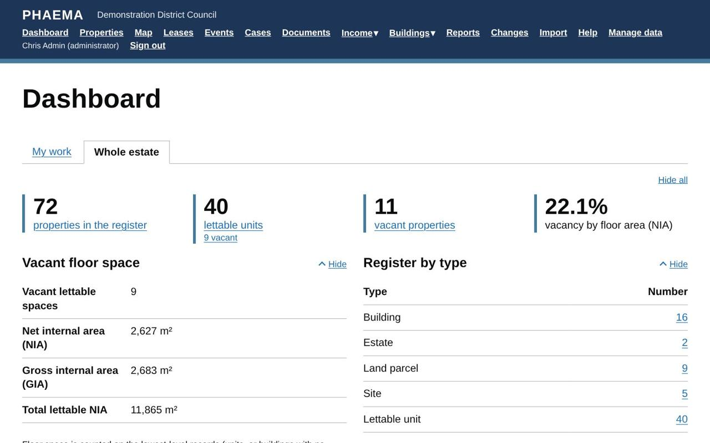
The menu at the top of every page takes you to each area.
| Menu item | What it is for |
|---|---|
| Dashboard | Your own work (My work) and the figures for the whole estate |
| Properties | The property register |
| Map | Every property with a location |
| Leases | Leases and licences, and the parties to them |
| Events | Key dates: rent reviews, breaks, expiries |
| Cases | Consents, requests and other work from start to outcome |
| Projects | Developments, acquisitions, disposals and programmes, taken through gateways (section 7) |
| Documents | Letters and notices filled in from PHAEMA, downloaded to Word |
| Income | Rents, arrears and service charges, when switched on |
| Buildings | Maintenance, compliance and asset valuation, when switched on |
| Reports | Ready-made and your own reports |
| Changes | The change log: who changed what, and when |
| Import | Administrators only: import from spreadsheets |
| Manage data | Administrators and surveyors: add and edit records and settings |
| Hand over work | Administrators only: move someone's properties, cases and tasks to colleagues |
| Help | This manual and the training courses |
Finding records
Every list has filters and a search box. Choose your filters and select Apply. Select a column heading to sort by it; select it again to reverse the order. Many lists can also be filtered by building or estate (including everything within it) and by managing surveyor.
Every list has Download Excel and Download CSV links, which download exactly what you are looking at, with your filters and order.
Adding and changing records
Use the Edit link on a record's page, or Manage data. Whether you can change a record depends on your role. Every change is recorded in the change log.
Reading a PDF
Leases, deeds, title documents, plans, certificates and any other PDF held in PHAEMA open in PHAEMA's own reader, on a page of their own. The page shows the name of the document and a link back to the record it belongs to, so you do not lose your place.
Pages shows or hides a strip of small pages down the side. Select one to go to that page; the page you are on is outlined. The strip starts open on a computer and closed on a phone, and PHAEMA remembers your choice.
‹ and › move a page at a time. Type a number in the box to jump to that page.
− and + zoom out and in. Fit width fills the screen across; Whole page shows a full page at once.
Rotate turns the pages, for a plan or a scan that is on its side.
Find searches the wording of the document. Type a word or phrase and press Enter: every match is highlighted, PHAEMA says how many there are, and the arrows move between them.
Download saves a copy with a name you will recognise. Print opens the document in your browser's own PDF reader in a new tab, where you print it in the usual way.
Find only works where the PDF holds real text. A scan is a picture of the page, so there is nothing to search unless the scanner made it searchable (often called OCR). A PDF protected with a password cannot be shown: download it and open it on your computer. Other files, such as Word documents, spreadsheets and AutoCAD drawings, still download.
Making PHAEMA easier to read
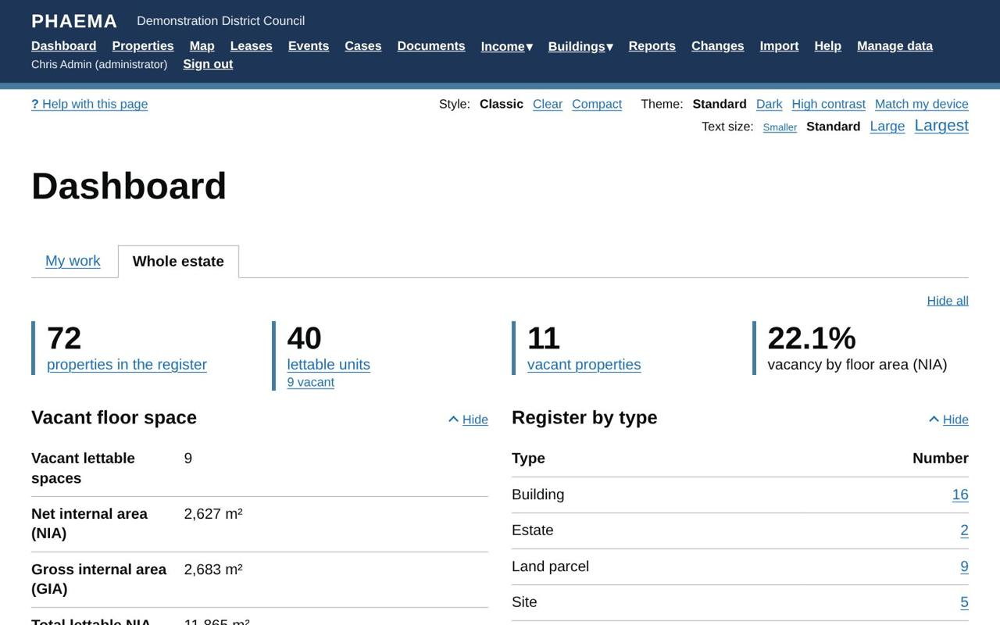
Under the menu are three settings that PHAEMA remembers on your computer:
Style: Classic (the GOV.UK look), Clear (boxed sections with an easy-to-read typeface) or Compact (more on screen).
Theme: Standard, Dark, High contrast (yellow on black), or Match my device.
Text size: Smaller to Largest. Browser zoom also works.
PHAEMA is designed to meet the Web Content Accessibility Guidelines (WCAG) 2.2 at level AA. Every page works with a keyboard alone and with screen readers.
Roles at a glance
| Role | Can |
|---|---|
| Administrator | Everything, including settings, imports, users and accepting valuations |
| Surveyor | Work on cases and change the properties, leases and events they manage |
| Contributor | Add notes, emails and documents to cases they are added to |
| Viewer | See the core of PHAEMA and the modules their access areas open, run reports and download lists |
Which optional modules each person can open (rent ledger, service charges, maintenance, compliance, asset valuation) depends on their access areas, described in section 15.
3. Dashboards
The dashboard is the first page after signing in, and everything on it links to the records behind it. It has two tabs, My work and Whole estate. Surveyors start on My work and everyone else on Whole estate; PHAEMA then remembers the tab you last chose.
My work
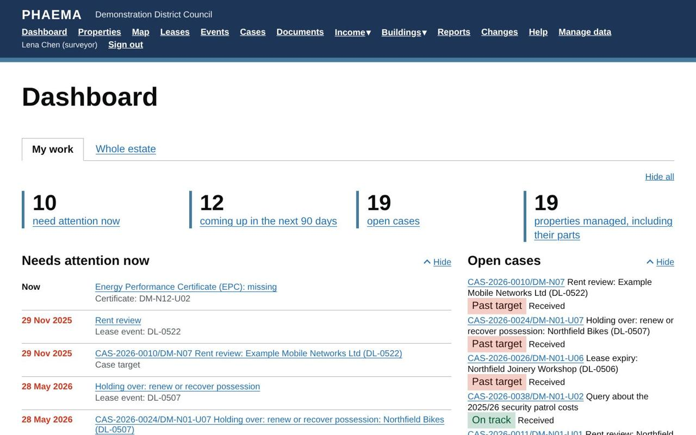
Needs attention now: anything overdue or waiting for you, oldest first. It covers your lease events (and unassigned events on your properties), cases past target, overdue case tasks, approvals waiting for you, repairs past target and overdue planned maintenance on your properties, missing or expired certificates, and audit queries to answer.
Coming up in the next 90 days: the same things falling due soon, plus certificates expiring and valuations assigned to you.
Open cases you own, with how each is doing against its target.
Properties managed: the properties you manage, with their parts, live lettings and rent. A surveyor who manages an estate or building also manages everything within it.
My projects: projects you lead or are on the team of. Your overdue project tasks and missed milestones appear under Needs attention now.
Compliance, rent arrears and open repairs on your properties, when those modules are on.
Supervisors can choose someone they supervise under Show the work of, for example to cover absence or for one-to-ones. Administrators can see anyone's.
Whole estate
Headline figures: properties in the register, lettable units, vacant properties and vacancy by floor area.
Vacant floor space: vacant net and gross internal areas. Floor space is counted on the lowest-level records only, so a building and its units are never counted twice.
Cases, maintenance and compliance at a glance, with anything waiting for your approval.
Lease events: open events by type, split into overdue and the next six months.
Rent roll: rent from current agreements by holding purpose, and the WAULT to expiry and to first break. With the rent ledger on, it also shows arrears and the collection rate over 12 months.
Recent changes: the latest edits, with who made them.
The Lease events panel also shows:
Tenancies at will in place, highlighted because they are meant to be short-term. Select the number to list them.
Lease expiries split into contracted in (the tenant has 1954 Act protection) and contracted out. A third line appears only when some agreements are marked not applicable or not known.
Lease documents to review: documents whose date for review has passed or falls in the next 6 months.
Time is of the essence: open rent reviews on agreements carrying that flag, in red, with how many are past the review date.
Hiding sections
Each section has a Hide link in its heading; Hide all and Show all do every section at once. PHAEMA remembers what you hide on that computer, and hidden sections still print.
4. Properties, maps and parties
The property register holds every property the council owns, leases or manages, except housing stock.
How properties fit together
Properties form a hierarchy, and each can be part of another:
Estate: a group of sites managed together, such as an industrial estate.
Site: one piece of land, which can hold buildings.
Building: a building on a site.
Lettable unit: a part of a building that can be let, such as a shop or office suite.
Land parcel: land without buildings, such as a field or car park.
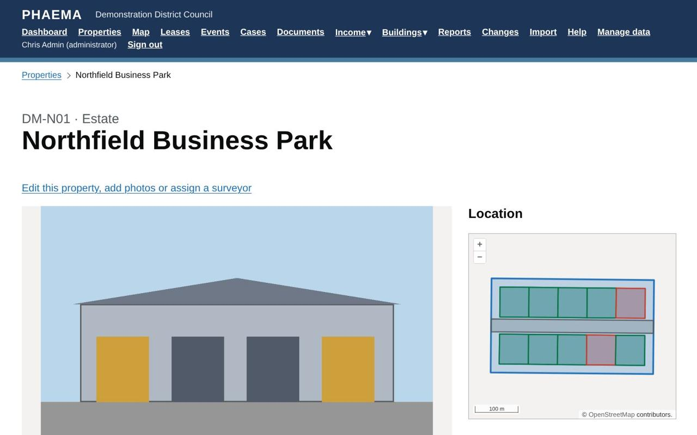
Key facts
| Field | Meaning |
|---|---|
| Reference | The council's unique asset reference |
| UPRN and USRN | National property and street reference numbers, linking PHAEMA to GIS, council tax and business rates |
| Holding purpose | Operational, investment, community, surplus, or held for disposal |
| Tenure | Freehold, leasehold, other, or none (managed but not owned) |
| Occupation | Council, let, partly let, vacant, or not applicable |
| Managing surveyor | The surveyor responsible. Events on the property's leases are assigned to them |
| Exclude from open data | For sensitive properties, left out of any published list |
| Disposed of, disposal price | When the council sold or transferred it, and for how much. The property stays for its history but leaves open data. Usually recorded from a disposal project's completion checklist. |
| Site hazards | What anyone visiting should know first. Shown on cases, jobs and valuations for the property and everything within it |
Three more facts classify a property for the council's own reporting:
| Fact | What it records |
|---|---|
| Portfolio | The service or portfolio that holds the property, such as Investment, Leisure, Children's Services or Adult Social Care. Administrators keep the list under Manage data, Portfolios. |
| Estate strategy section | The section of the council's estate strategy or asset management plan that covers the property. Blank until the council fills it in. |
| Holding purpose review date | When the reason for holding the property is next due for review. |
The register can be filtered by portfolio and by holding purpose reviews that are overdue or due in the next 12 months. All three are columns in reports and in the import template.
Floor areas
PHAEMA records gross internal area (GIA) and net internal area (NIA) in square metres, and site area in hectares. The property page shows the GIA and NIA of the buildings within, the lettable NIA, the non-lettable area and the net-to-gross ratio. Record how areas were measured (RICS Code of Measuring Practice or IPMS), the source (survey, drawings, lease plan or estimate) and the date. The report Floor areas with no measurement basis lists properties still to check.
Site and buildings
The Site and buildings section of a property's page describes what is physically there, so that whoever manages or values it can understand it without a visit. Fill it in from Edit this property, under Site and buildings and Services. Leave blank anything you do not know: blanks are not shown.
| What | Notes |
|---|---|
| Location | Where the property is and what surrounds it: the part of town, road links, neighbouring uses, access |
| Site area | In hectares or square metres. Type either one and PHAEMA works out the other |
| Description | For a site, the buildings and land. For a building, its layout and accommodation |
| Built | A year or a period, such as 1987 or 1930s |
| Construction | Chosen from a list, with a line of detail such as "cavity brick walls, solid concrete floors" |
| Storeys | Above ground, with basement levels counted separately |
| Roof type and covering | Each chosen from a list, with a line of detail for mixed roofs or the date of re-covering |
| Windows | Chosen from a list, with a line of detail |
| Parking | A description and the number of spaces |
| Services | Mains gas, electricity (three-phase or single-phase), mains water and drainage, with notes for heating, capacity or meters |
| Solar panels | Yes or no, and the capacity in kWp |
Sites with several blocks. Record the site as a whole (location, site area, parking) on the site or estate, and the construction, storeys, roof, windows and services on each building within it.
Floor plans. In Edit this property, under Floor plans, add each plan with a title such as "Ground floor plan". Plans can be PDFs or AutoCAD drawings (.dwg or .dxf), up to 50 MB each. PDFs open in PHAEMA's reader (see Reading a PDF); AutoCAD drawings download to open in your drawing software. Surveyors can add plans to the properties they manage.
Adding plans and photos by dragging. On the property's page, open Add floor plans or photos and drag the files onto the box for plans or the box for photos, or choose them: up to 20 at a time. Each plan is titled, and each photo captioned, with its file name; change these, or remove one, in Edit this property.
All of these can be chosen as columns and filters in reports, and filled in from a spreadsheet with the property import.
The property report
Property report on a property's page gathers everything PHAEMA holds about it into one document: the key facts, location, description, construction and services (with each building in turn), floor areas and how they are made up, floor plans, titles, current tenancies and other agreements with their main terms, and the cases in hand. It ends with a list of what a valuer is likely to ask for that has not been recorded yet. Read it on screen, print it, or select Download as Word to edit and send. On an asset valuation case the same report is headed Initial valuation report (section 13).
Photos and titles
Add photos in Edit this property: they are resized and their location data removed. Land Registry titles are linked to properties and can hold the register and plan as PDFs; administrators manage them.
The map
Select Map to see every property with a boundary or a grid reference, coloured by occupation. Filters work as on the property list. OpenStreetMap is always available; Ordnance Survey maps appear when an administrator adds the council's OS Maps API key. Administrators can import HM Land Registry INSPIRE Index Polygons, and anyone who can change a property can set its boundary from those parcels. INSPIRE boundaries show the general extent of a title, not its legal boundary.
Parties
A party is anyone the council has an agreement with: tenant, landlord, licensee or guarantor. Each is recorded once and linked to all their agreements. A party's page shows contact details, company or charity number, every agreement and property, and the total rent. Record the finance customer reference to link the party to the finance system.
Worked example
DM-N01 Northfield Business Park is an estate. Its parts are the Hangar block (units 1 to 5), the Workshop block (units 6 to 10) and the estate roads. Units 4 and 10 are vacant, so the estate shows as partly let. Lena Chen manages DM-N01, so she also manages every block and unit within it. DM-N06 Former Northfield bus depot has no managing surveyor (filter the register by Managing surveyor: Nobody) and records site hazards, which appear on every case, job and valuation for it.
5. Leases, rents and key dates
PHAEMA records every agreement over council property, let out by the council (it receives rent) or held by it (it pays rent): leases, licences, tenancies at will, agreements for lease, farm business tenancies, wayleaves, easements and concessions.
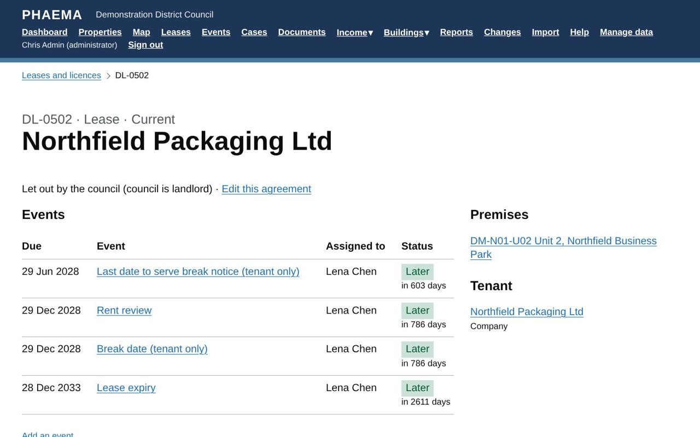
Adding an agreement
Select Add a lease or licence on the lease list. You need a unique reference, the tenant or landlord (a party), any guarantor, the premises (one or more properties), the term start and, unless it is periodic, the term end. To add many at once, import them.
Terms
| Field | Notes |
|---|---|
| Status | Proposed (heads of terms), Current, Holding over or Ended |
| Security of tenure | Inside the Landlord and Tenant Act 1954, Part II, or contracted out |
| Rent and frequency | The current rent comes from the rent schedule |
| Review basis and interval | The next review date creates a rent review event |
| Repairing and insurance | Who repairs and insures; used to work out who pays for repairs |
| Service charge payable | Whether a service charge is due |
| Deposit | Amount, where held and who gets the interest |
| Alterations, use, alienation, special rights | As the lease says |
Four more settings in Edit this agreement flag how the agreement is managed:
| Setting | What it does |
|---|---|
| Time is of the essence | Tick it in the rent review section if the lease makes time of the essence, so a missed date in the review timetable can lose the review. The review is flagged in red on the dashboard, the events list, the event page and My work. |
| Rent demands on hold | Stops demand runs raising rent or service charge on the agreement, with the reason. See the rent ledger section. |
| Arrears passed to | Records that the debt has gone to external debt collectors or to legal, with the date and their reference. |
| Billing contact | Who rent demands go to. Leave it blank to use the tenant's main contact; fill in only the details that differ, such as an accounts email. |
Add break options with the break date, who can exercise it and the notice period: PHAEMA works out the last date to serve notice and creates events for both. Store the signed lease and other documents under Documents.
Documents and dates for review
Any lease document can carry a date for review: when it should next be looked at. Use it for an insurance certificate's expiry, a schedule of condition to re-inspect or a side letter that runs out. Documents coming due are counted on the dashboard, and Events, Documents to review lists them, soonest first, with a download. Lease documents is also a record type in reports.
Where the tenant insures, the agreement page shows the latest insurance certificate held, or a warning that there is none. Select Start a case to get the tenant's insurance certificate: the case has tasks to ask for the certificate, check the cover and add it to the agreement's documents with its expiry as the date for review.
The rent schedule
Each agreement has a list of rents, each with the date it takes effect; the current rent is always the latest one in force, so stepped rents change on the right day. Rent reviews add entries when you record the outcome. Add fixed steps, index-linked increases, concessions or variations with Add a rent step, concession or variation. Change rents here, never by editing the agreement or importing, so the history is kept.
Lease events
An event is a key date someone must act on. PHAEMA creates rent reviews, break notice deadlines, break dates and expiries from the agreement, and keeps them up to date. Add others with Add an event. Events are assigned to the managing surveyor of the premises.
| Colour | Meaning |
|---|---|
| Red | Overdue: the date has passed with no outcome |
| Orange | Due within 3 months |
| Yellow | Due within 6 months |
| Green | Later |
| Grey | Completed or lapsed |
Rent reviews and lease expiries (renewals) have an estimated rental value: the surveyor's view of the market rent. Enter it under Assign or update on the event. The event shows how far it is above or below the current rent, and it is a column in the events and leases reports.
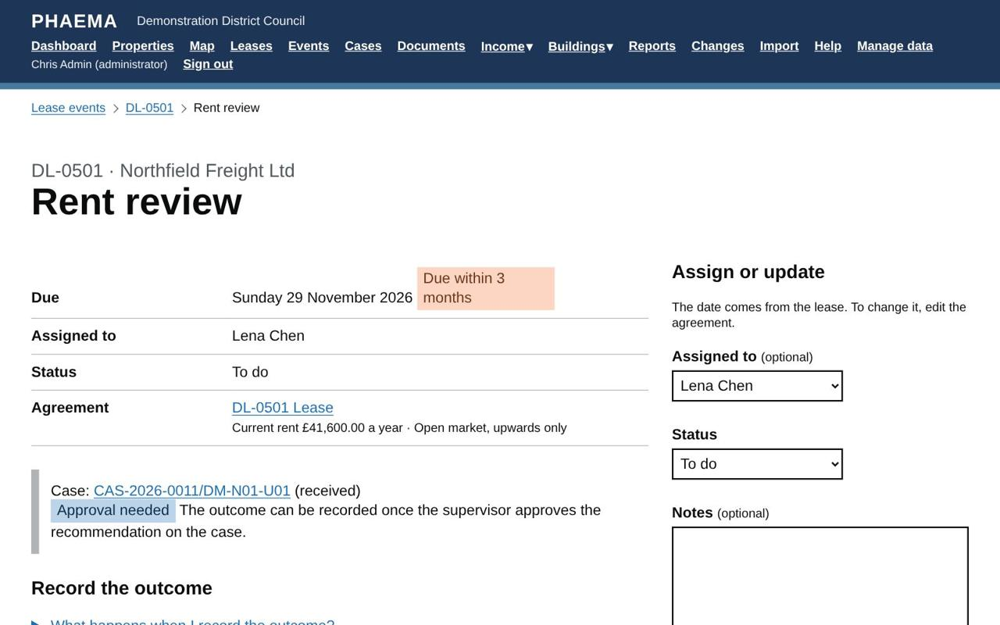
Recording the outcome
Open the event and select Record the outcome.
Rent review: enter the new rent, its date and the next review date. The rent schedule and the next review are updated.
Break notice deadline: Break notice served keeps the break date open; No notice served closes both.
Break date: Break exercised ends the agreement; Not exercised closes the event.
Expiry: Tenant vacated, Renewed or Tenant holding over.
Break dates and notice deadlines that pass without an outcome lapse automatically. If the event's case needs approval, the outcome waits until the supervisor approves.
Reminders and your calendar
PHAEMA emails each person a digest of their upcoming events (by default 180, 90 and 30 days before a rent review, and 365, 180 and 90 days before an expiry), and every Monday a list of anything overdue. Under Events, Calendar, you get a private address to subscribe to in Outlook or another calendar app.
Worked example
DL-0502 is Northfield Packaging Ltd's lease of Unit 2: ten years inside the 1954 Act, £39,000 a year plus VAT, reviewed upwards only every five years, full repairing with a service charge, and a £9,750 deposit in the council's deposit account. The tenant can break at year five on six months' notice, so PHAEMA has created a break notice deadline six months before the break date. If no notice arrives by the deadline, Lena Chen records No notice served and the lease runs on. DL-0530 is the other way round: the council holds the Northfield Innovation Hub at £38,000 a year.
6. Cases and approvals
A case is a piece of estate work with an owner, stages, tasks and an outcome: a consent to assign, a licence for alterations, a rent review, a dilapidations claim, a request to film on council land. Each has a reference such as CAS-2026-0042/DM-E01-U04: the year, a number and the main property.
Where cases come from
Lease events open cases by themselves ahead of the date: nine months for reviews and break notices, twelve for expiries. You can also select Start a case for this event.
Requests and other work: Cases, Start a case, or Start a case on an agreement or property. Choose the type, link the agreement or property, and record how and when it arrived.
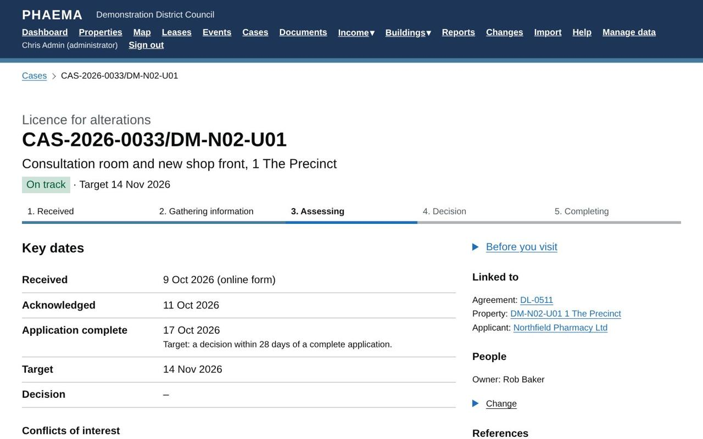
Stages and tasks
Every case moves through Received, Gathering information, Assessing, Decision and Completing. Select Move to next stage as the work progresses. A case can be put on hold with a reason, and closed cases can be reopened. Each case type has a task list for each stage; tick tasks off and add your own.
Dates and targets
| Date | What it is |
|---|---|
| Received | When the request arrived; for consents, the written application |
| Acknowledged | Due within 10 working days by default |
| Application complete | When everything needed to decide has arrived; the target counts from here |
| Target | 28 days after a complete application for consents; for event cases, the event's date |
| Decision sent | When the decision letter went |
For consents to assign, underlet, charge or share, the Landlord and Tenant Act 1988 requires a written decision within a reasonable time, with reasons for conditions or refusal. PHAEMA will not save conditions or a refusal without reasons, and the report Consent decisions: time to decision gives the evidence.
Approvals
Every surveyor has a supervisor who approves their recommendations. Most case types need approval before Decision. When a case reaches that point, Move to next stage becomes Ask for approval:
Confirm Conflicts of interest: no conflict, or declare one and how it is managed.
Write your recommendation and select Ask your supervisor for approval.
Your supervisor is emailed and sees it on their dashboard. They Approve, or Return with comments for you to revise.
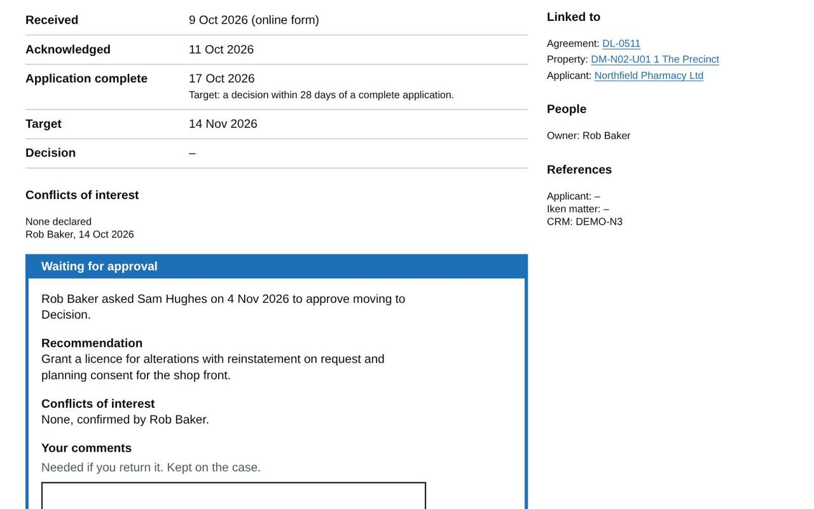
Until it is approved you cannot record a decision other than Withdrawn, close the case, or record the outcome of its lease event. Nobody can approve their own request; an administrator can send a waiting request to someone else, or approve it.
New lettings and renewals
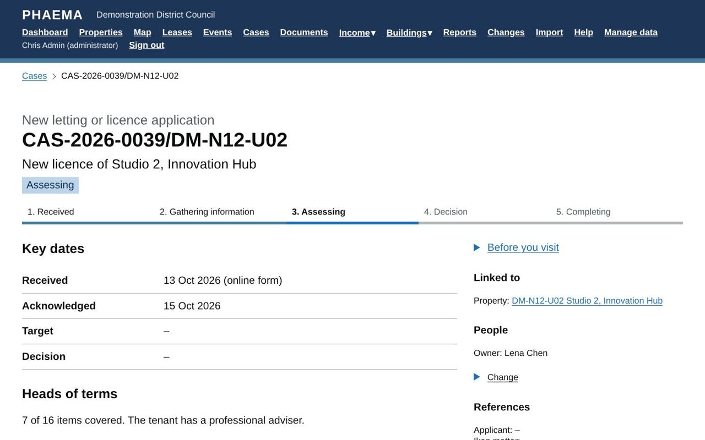
New letting and renewal cases list the 16 heads of terms items the RICS Code for leasing business premises requires. For a renewal, each shows what the current lease says. Record whether the tenant has a professional adviser, and if not, the date you gave them the Code. The case cannot move to Decision until every item is covered.
Renewal cases also record a section 25 notice or section 26 request. PHAEMA shows the council's counter-notice date and the last day to apply to court, which becomes the target, and warns about dates that do not fit the Act. Check them against the notice: PHAEMA is a reminder, not legal advice.
Dilapidations, MEES and site safety
Dilapidations and expiry cases record the schedule and date served, the tenant's response, the settlement, the council's costs and any deposit held.
MEES: on lettings and renewals, PHAEMA warns if the EPC is rated F or G, has expired or is missing. It is a warning, not a block.
Before you visit: cases, jobs and valuations show site hazards, asbestos information, open compliance actions and whether it is a higher-risk building.
Site visit sheet
Every case that is about a property, or about an agreement over one, has a Site visit sheet link. It is one page to take with you on a visit, laid out for a phone and for printing, in four parts:
The case: reference, type, what it is about, the owner, target date, and the applicant or tenant with their contact details.
Before you visit: the site hazards recorded for the property, everything it is part of and the buildings within it; what is known about asbestos; open compliance actions; and who occupies the property, with a contact name and phone number.
The property: the parts of the property record that matter for this type of case, such as the description, construction, services, floor areas, floor plans held, tenancies and other open cases.
On site: the checklist for this type of case. Where an item checks something on the record, the recorded value is printed beside it, so you confirm it or note the difference. There is space for who visited, when, who you met, notes and measurements.
On a site with several buildings, things checked once (signing in, occupation, photographs) are listed for the visit as a whole, and the items about a building are repeated under each building with that building's own details.
Select Print to write on it, or Download as Word. Nothing you tick or type on the page is saved: when you are back, add a note and photos to the case, and correct the property record where the visit showed it was wrong. Read the full asbestos register in PHAEMA before any work that disturbs the building.
Notes, emails and documents
File documents and emails takes several files at once. Drag them onto the box from a folder or your desktop, or select Choose files, then File them: up to 20 at a time. Saved emails (.eml or .msg) are read and filed as correspondence with their attachments; set Emails were to Received or Sent first. Every other file is kept as a document named after its file. Anything PHAEMA cannot accept is listed, and the rest are still filed. From Apple Mail you can drag an email straight onto the box; from Outlook, drag the email to your desktop first, then onto the box. The same way of filing works on an agreement's page, under Documents (PDFs, with a type of document), and on a property's page, under Add floor plans or photos. Wherever PHAEMA asks for a single file, you can drag it onto Choose file instead of browsing for it.
File an email (saved from Outlook as .msg or .eml): PHAEMA keeps the email and its attachments. Log a letter, call or meeting, Add a note (tick Confidential so only the owner and administrators see it), or Add a document up to 25 MB. Add contributors, such as the legal officer, who can add to the case but change nothing else.
Worked example
Northfield Pharmacy (DL-0511) asks to add a consultation room and new shop front at 1 The Precinct. Rob Baker opens a licence for alterations case, records the acknowledgement and then Application complete when the drawings arrive, which sets the 28-day target. He confirms there is no conflict of interest, recommends granting the licence with reinstatement on request, and asks Sam Hughes for approval. Once Sam approves, Rob records the decision and creates the consent letter.
7. Projects
A project is a larger piece of work than a case. It can cover several properties (a development or a programme), properties the council is selling (a disposal), or no property yet: an acquisition starts with a proposed site. Select Projects in the menu. Each project has a reference such as PRJ-2026-001.
| Kind | Typical example |
|---|---|
| Development | Replacing an old building with new units |
| Acquisition | Buying land for a new depot |
| Disposal | Selling surplus land in lots |
| Programme | Energy upgrades across many buildings |
| Strategic review | An options appraisal for a service's buildings |
Starting a project
Administrators and surveyors select Start a project, give it a name and kind, choose the lead and add the sponsor and dates. For an acquisition, describe the proposed site and, if known, its title number and the vendor. PHAEMA adds starter tasks for the kind of project. Add colleagues to the Team with their role, and outside parties such as agents or architects.
Phases and gateways
A project moves through five phases: Idea, Business case, Delivery, Completion and Close. It moves on only when a gateway decision is recorded: who decided (an officer, Cabinet or a capital board), the outcome, the date, the decision reference and, if you like, the report. Approved moves it on, Deferred keeps it where it is and Rejected stops it. A project can also be paused, restarted or stopped, with a reason.
Milestones, tasks and status
Add milestones with a target date and keep the forecast and achieved dates up to date. The project shows red when a target passes unachieved, and amber when a forecast is later than its target, a task is overdue or the project is paused. Project tasks and milestones you own appear on My work, with My projects.
Budget
The budget is a set of lines (fees, land, works, contingency, income), each capital or revenue, with approved, forecast and actual figures for each financial year. The project page totals them by year and says how far the forecast is over or under budget. The team, administrators and people with the Finance access area see the budget; the project's managers and finance officers can change it. Finance can load actual spend from the ledger with Import, Project spending.
Risks and linked work
Record each risk with its likelihood and impact from 1 to 5; PHAEMA multiplies them into a score, highest first, each with an owner and a mitigation. Link cases and maintenance jobs by reference, and asset valuations, that are part of the project; their pages then show Part of project to people who can see it.
The proposed site and map
The project page maps its properties. For land not yet on the register, select Draw the proposed site and enter one or more HM Land Registry INSPIRE parcel IDs; PHAEMA joins them into the site boundary.
Completion checklist
From delivery onwards the Completion checklist shows what the register will need: adding the new property and title after an acquisition, new units after a development, or each property's disposal date and price after a sale. Each step links to the right form, filled in from the project. PHAEMA never changes the register by itself: you save each change and tick the step. Steps marked "checked by PHAEMA" tick themselves, such as a disposal once its date is recorded. A disposed property shows Disposed of and drops out of open data.
Confidential projects
Confidential projects, including every acquisition when it starts, are seen only by their team and administrators: others cannot find them in lists, on property pages or in reports, and their documents open only from the project page. Every opening is recorded under Who has opened it, which the lead and administrators can see.
Worked example
PRJ-2026-001 Northfield Business Park phase 2 replaces the Hangar block with twelve light industrial units. Gateway 1 is approved and the business case is due at Cabinet, but its forecast is later than the target, so the project shows amber. PRJ-2026-002 Depot site acquisition, Mill Lane is confidential: Cabinet approved it at gateway 2, and its checklist is ready to add the land and its title once the purchase completes. PRJ-2026-003 is selling two surplus sites; each lot ticks itself off when its disposal is recorded.
8. Document library
The document library holds templates for the letters and notices estates work needs. PHAEMA fills them in from its records and gives you a Word document to check, finalise and issue. Find it under Documents.
Creating a document
Most documents start from a case: select Create a letter or notice to see the templates for that type of case. Letters about an agreement, such as an arrears reminder, are on the agreement's page; the valuer's instruction is on the valuation's page.
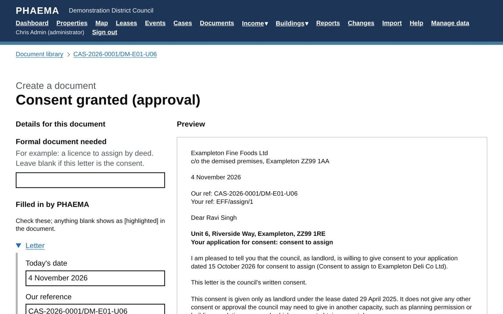
Answer any questions the template asks, such as the conditions of a consent.
Check the details PHAEMA filled in. Changes here affect this document only.
Select Update the preview. Anything PHAEMA could not fill in shows in [square brackets], highlighted yellow.
Select Download as Word. From a case, a copy of the draft is kept on the case unless you untick the box.
Finalise in Word, issue it, and file the signed copy back on the case.
The templates supplied
| Group | Templates |
|---|---|
| Consents and licences | Acknowledgement; request for information; costs undertaking; consent granted; consent with conditions; consent refused; approval of an activity; instruction to legal |
| 1954 Act notices | Section 25 not opposing and opposing (particulars); counter-notice to a section 26 request; acknowledgement of a section 26 request; section 40 request (particulars); contracting out |
| Other notices | Section 146 notice; section 17 notice (particulars) |
| Lettings and renewals | Heads of terms; letter to an unrepresented tenant enclosing the RICS Code |
| Rent | Rent review proposal; rent review memorandum |
| Arrears | Arrears reminder; final notice before action |
| Lease management | Break notice acknowledgement; breach of covenant; dilapidations covering letter; deposit return |
| Asset valuation | Instruction and terms of engagement; response to the auditor |
| General | Enquiry acknowledgement; general letter |
Prescribed forms
Some notices must use a form prescribed by law, such as section 25 notices. For these PHAEMA produces the particulars (names, premises, dates, grounds) with a checklist and a red warning naming the form. Put them on the current official form and have the council's legal team check it before it is served. All templates are starting points, not legal advice.
Adding and changing templates
Administrators select Manage templates to change a template, save the council's own copy, or add a new one. Templates use fields such as {{ tenant_name }}, simple formatting, [[signature]] for the signature block, and questions for details the author supplies. The letterhead comes from Module settings, under Letters and notices.
9. Rent ledger
The rent ledger charges rent on agreements the council lets out, records payments from the finance system and shows what each tenant owes. When it is switched on, Rents appears under Income.
Who raises the invoices
In settings the council chooses either that PHAEMA numbers the invoices (for example PH000123) and finance records them, or that the finance system raises the invoices from PHAEMA's charges (referenced PHC000123). Either way, charges go to finance in the finance export and receipts come back by import.
Raising rent
Administrators select Rents, Raise rent, choose the payment dates to charge and the issue date, select Preview the charges, check the list, then Raise these charges.
Rent is due in advance on each payment date, at the rent in force on the first day of the period.
Part periods are apportioned by day (annual rent × days ÷ 365).
VAT is added where the agreement is marked VAT chargeable.
Peppercorn agreements and those the council holds are not charged.
With service charges on, the same run charges service charge on account.
A period is only ever charged once, so runs can overlap safely.
Agreements with rent demands on hold are left out of the run, for both rent and service charges, and the preview names them with the reason. Put an agreement on hold in Edit this agreement. When the hold is taken off, run the same dates again and PHAEMA raises what was missed.
Charges cannot be deleted: correct mistakes with a credit note.
Rent accounts
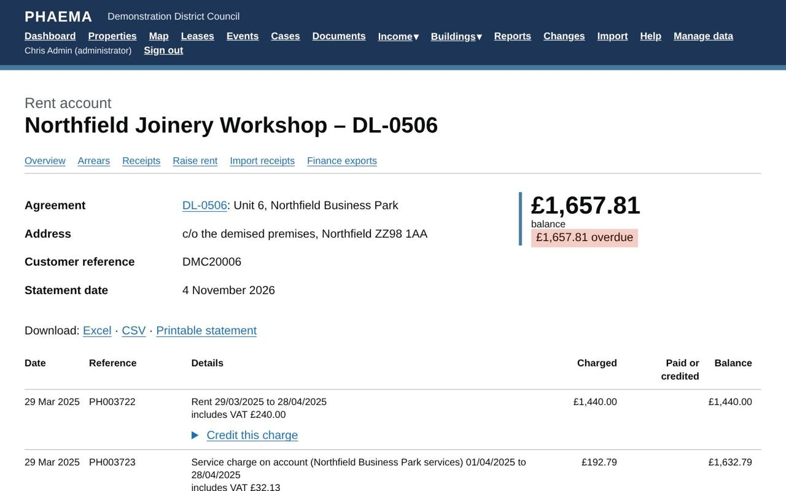
Each agreement's account lists every charge and payment with a running balance. Payments are set against the oldest debt first. Download it to Excel or open the printable statement to send to the tenant.
The account and the statement use the agreement's billing contact where one is set, and the tenant's main contact otherwise.
Credit notes
Administrators open Credit this charge on the account, enter the amount (or leave it blank for the whole charge) and a reason. VAT is credited in proportion, and the credit goes to finance in the next export.
Receipts
Payments are imported from the finance system under Rents, Import receipts. Each is matched by lease reference, then the invoice reference quoted, then the customer reference if that customer has a single agreement. Importing the same file twice is safe.
Arrears
Rents, Arrears lists every agreement with overdue rent, aged into 1 to 30, 31 to 60, 61 to 90 and over 90 days. The dashboard shows total arrears and the collection rate: rent received in the last 12 months as a percentage of rent that fell due.
An agreement whose debt has been passed to external debt collectors or to legal is tagged on the list with the date. Record it in Edit this agreement, under Rent demands and arrears. Filter the list to show only those passed over, or only those still with the council; the download has the same columns.
The finance export
Rents, Finance exports collects every charge and credit note not yet sent into a numbered export, in Excel or CSV, with fixed columns (record type, references, customer, lease, premises, UPRN, description, period, dates, net, VAT code and rate, VAT, gross, income code). Each charge is exported once.
The export's customer address is the agreement's billing address where one is set. Two columns at the end, Billing contact and Billing email, give the billing contact, or the tenant's main contact if none is set. They were added at the end so that a finance system's existing column mapping is not disturbed.
Worked example
Northfield Joinery Workshop (DL-0506) pays £14,400 a year monthly in advance, plus VAT: £1,440 a month. Its account shows the last two monthly charges unpaid, so it appears on the Arrears list. Northfield Bakery (DL-0514) has paid part of its latest charge, which shows as the balance on that charge.
10. Service charges
Service charges recover the cost of shared services, such as estate roads, landscaping, security and cleaning, from the tenants who benefit. The module needs the rent ledger, because service charges are demanded and collected through it. It follows the RICS professional standard Service charges in commercial property (2nd edition): a budget before the year, payments on account, and a year-end statement reconciling actual costs, with all income credited.
Schedules and shares
A schedule is one pool of shared costs. Administrators set out the properties covered, how costs are shared (floor area, fixed percentages or equally per unit), when the year starts, and the contributing leases, each with any annual cap. Shares are worked out over all lettable units including empty ones: the council pays the share of any unit not let.
Budgets and payments on account
Add the budget by heading, with a budget commentary explaining main changes and planned works, then select Approve the budget. Each lease has a printable budget statement. From then on, every demand run also charges each lease its share as service charge on account, on its rent payment dates.
Spending
Record actual costs on the year, or import them from finance (Import, Service charge spending). Record income such as interest, rebates and insurance commissions so it reduces the total shared. Untick Recoverable for costs the leases do not allow. Mark Improvements (recoverable only if tenants agreed) and Building Safety Act defects (never recoverable).
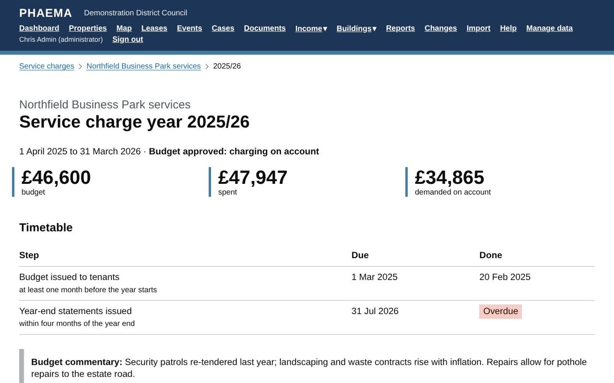
Timetable
The budget should reach tenants at least one month before the year starts, and year-end statements within four months of the year end. The year page shows both due dates and what you recorded, and administrators get a list of deadlines every Monday. If you record either as issued late, PHAEMA asks for the reason, which is printed on the documents with an apology.
Apportionment matrix and year end
The Apportionment matrix shows every heading split between the leases and the council. After the year ends, select Reconcile the year. For each lease PHAEMA takes its share of actual spending, scaled by the days it was in force, limited by any cap, less what was charged on account, and raises a balancing charge or balancing credit on the rent account. Each lease has a printable year-end statement.
Worked example
Northfield Business Park services shares the gatehouse security, roads, landscaping, CCTV and waste between eight leases by floor area. Units 4 and 10 are empty, so the council pays their shares. DL-0509's lease caps its service charge at £1,800 a year, so anything above that falls on the council too.
11. Maintenance
Maintenance links repairs to the lease: who pays is worked out from the repairing terms, and the cost can go straight to the tenant's rent account or the service charge. It appears under Buildings, with an Overview of emergencies, jobs past target, overdue statutory tasks, contracts to re-tender and contractors whose insurance is running out.
Reporting a repair
Select Report a repair, choose the property, say what needs doing, and choose a category and priority. Weekends and bank holidays are not counted. Each job gets a number such as JOB-2026-0042, which is also the works order number.
| Priority | Target |
|---|---|
| Emergency | Make safe the same day |
| Urgent | Within 5 working days |
| Routine | Within 20 working days |
| Planned | The planned task's due date |
Who pays
| Lease | Inside | Structure, roof and exterior |
|---|---|---|
| Full repairing | Tenant | Tenant |
| Internal repairing, or limited by a schedule | Tenant | Council, through the service charge if there is one |
| Landlord repairs | Council (service charge if any) | Council (service charge if any) |
| Not let | Council | Council |
The suggestion is a starting point: change it on the job with a reason, for example Council, recharged to the tenant for damage they caused. Always check the lease for anything unusual.
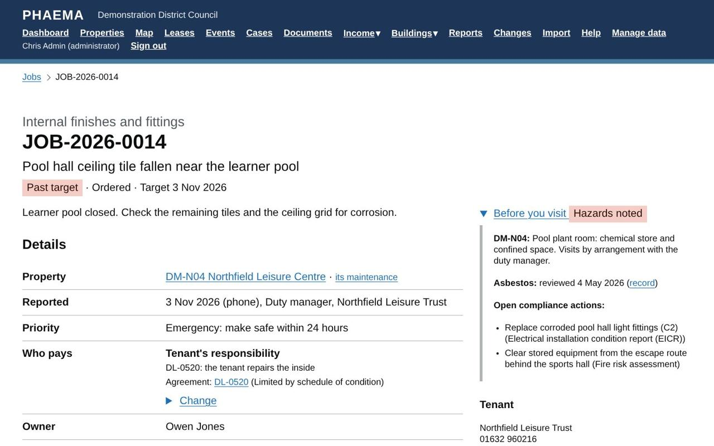
Works orders and approval
Choose the contractor, enter the estimate and any purchase order number, then Issue the works order; PHAEMA can email it, and warns if the contractor's insurance has expired. Orders above the approval limit (£5,000 by default) need your supervisor's approval first. If the estimate changes after approval, it needs approving again.
Completing and paying
Record the completion date, work done, final cost and invoice number, and add photos or certificates. For a recharge, select Recharge the cost to charge the tenant's rent account. For the service charge, choose the year and heading. Close the job when everything is settled.
Planned maintenance and components
Add tasks from the library on a property's maintenance page adds common statutory and planned tasks (gas safety, EICR, fire alarm servicing, emergency lighting, legionella, asbestos re-inspection, lift examinations and more) with their usual frequency. PHAEMA raises a job 28 days before each is due; completing it sets the next date. Check frequencies against your own risk assessments.
The component register records roofs, boilers, lifts and other parts with year installed, expected life, condition (A good to D bad) and replacement cost. The Lifecycle forecast shows replacements due over 5 to 30 years, split between capital and revenue.
Contractors and contracts
Administrators record contractors with contacts, out of hours number, insurer, cover, insurance expiry and accreditations. The contracts register shows when each service contract is due to be re-tendered or benchmarked (at least every three years, as the RICS service charge standard expects).
Worked example
At Northfield Leisure Centre a ceiling tile has fallen near the learner pool: an emergency, ordered the same day, and the job's Before you visit panel warns about the pool plant room. At Northfield Market Hall, replacing cracked roof-lantern panes is estimated at £14,800, above the approval limit, so the order waits for Sam Hughes.
12. Compliance and building information
The compliance module keeps the certificates each building needs, warns before they expire, tracks the actions they call for, and holds the building's information (the Golden Thread) for its whole life. Find it under Buildings, Compliance, and on each property page.
Setting up a property
On a property's compliance page, select Choose the certificates this property needs. Typical periods:
| Certificate | Usually valid for |
|---|---|
| Fire risk assessment | 12 months (review) |
| Fire alarm inspection and service | 6 months |
| Emergency lighting test | 12 months |
| Gas safety record | 12 months |
| Electrical installation condition report | 5 years |
| Legionella risk assessment | 2 years |
| Asbestos register review | 12 months |
| Lift thorough examination | 6 months |
| Energy Performance Certificate | 10 years |
| Display Energy Certificate | 12 months |
Administrators can change the periods or add types. PHAEMA suggests who holds each certificate: a tenant on full repairing terms of the whole property holds its own and the council keeps a copy.
Recording a certificate
Select Record a certificate, enter the date, the result and the PDF, and the rating for an EPC or DEC. Statuses are Valid, Actions open, Expires soon (within 60 days), and Expired, Missing or Unsatisfactory, which show red. Type any remedial actions one per line with a priority: high (7 days), medium (30) or low (90). Each is tracked until done, and Raise a repair job turns one into a job.
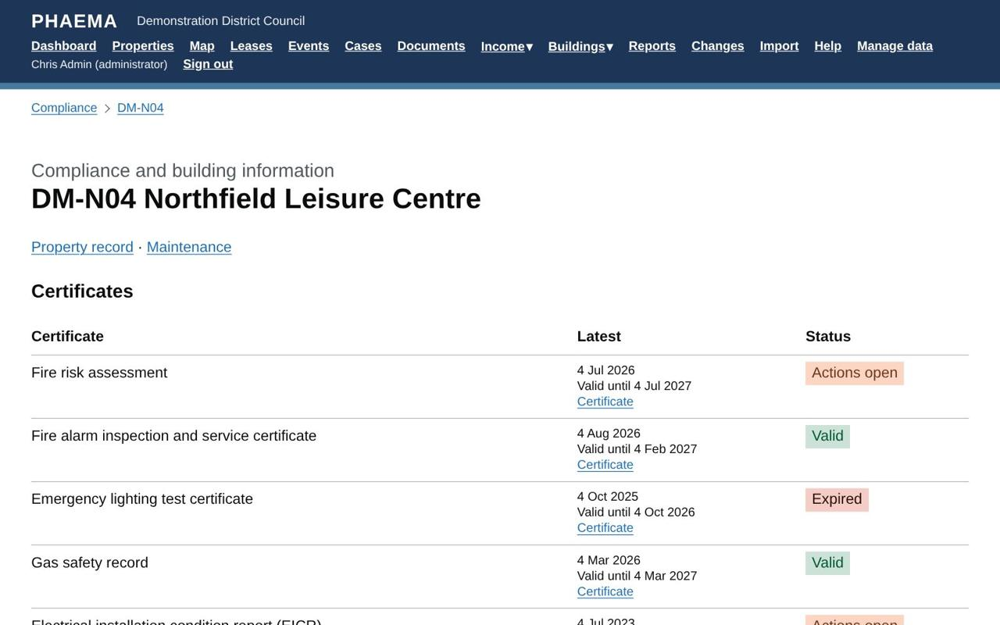
Golden Thread tiers
| Tier | For |
|---|---|
| A, statutory | Higher-risk buildings in England (18 m or 7 storeys, with at least two homes) and in-scope buildings in Wales |
| B, best practice | Other buildings under the Fire Safety Order |
| C, minimal | Land and simple assets |
Use Screen this building to record the country, height, storeys, homes and responsible person. PHAEMA suggests the tier and an officer confirms it.
Building information
Add a document or a new version keeps plans, fire safety information, health and safety files, manuals and surveys. A new version supersedes the old one, which is kept: building information is never deleted.
Open data
When an administrator ticks Publish open data, PHAEMA publishes the Transparency Code land and assets list and the list of available property at /open-data/, as CSV, JSON and GeoJSON under the Open Government Licence. Properties marked Exclude from open data never appear.
Worked example
Northfield Leisure Centre needs ten certificates. Its air conditioning inspection (TM44) is missing and its emergency lighting test has expired. The fire risk assessment is in date but has an action open (clear the escape route behind the sports hall). Its tier is B, with the leisure trust as responsible person day to day.
13. Asset valuation
The asset valuation module manages the valuations the council needs for its accounts, following the CIPFA Code of Practice on Local Authority Accounting and the RICS Red Book. Find it under Buildings, Asset valuation.
Finance's criteria
Finance sets, under Manage data, the asset classes (basis, how often revalued, index, depreciation), the year end, the de minimis, the componentisation threshold and valuer rotation. PHAEMA starts with the CIPFA classes:
| Class | Basis | Revalued |
|---|---|---|
| Other land and buildings | Existing use value; DRC for specialised buildings | Every 5 years |
| Investment property | Fair value | Every year |
| Surplus assets | Fair value | Every 5 years |
| Held for sale | Lower of carrying amount and fair value less costs to sell | Every year |
| Heritage, community, under construction | As finance decides, or historic cost | Not revalued by default |
Classify each top-level property (the first time, Classify them from their holding purpose); reclassify with a date and reason, and the history is kept.
The yearly programme
The page lists the assets due at the year end and why. Download the valuer's data pack, then Start the programme (administrators), which opens a programme case and an asset valuation case for each asset.
Initial valuation report. Every case in the Asset valuation group that is about a property has an Initial valuation report link. It brings together for the valuer the property's key facts, location, description, construction and services (each building on a site in turn), floor areas and their basis, the floor plans held, titles with their restrictions, current tenancies and other agreements with their term, rent, review, breaks, security of tenure, repairs and permitted use, and the other open cases. It ends with a list of anything a valuer usually needs that has not been recorded. It is drawn from the records as they are when you open it, so correct the property or agreement and open it again. Select Download as Word to add your own comments and send it, then file the version you sent on the case. It is background information, not a valuation.
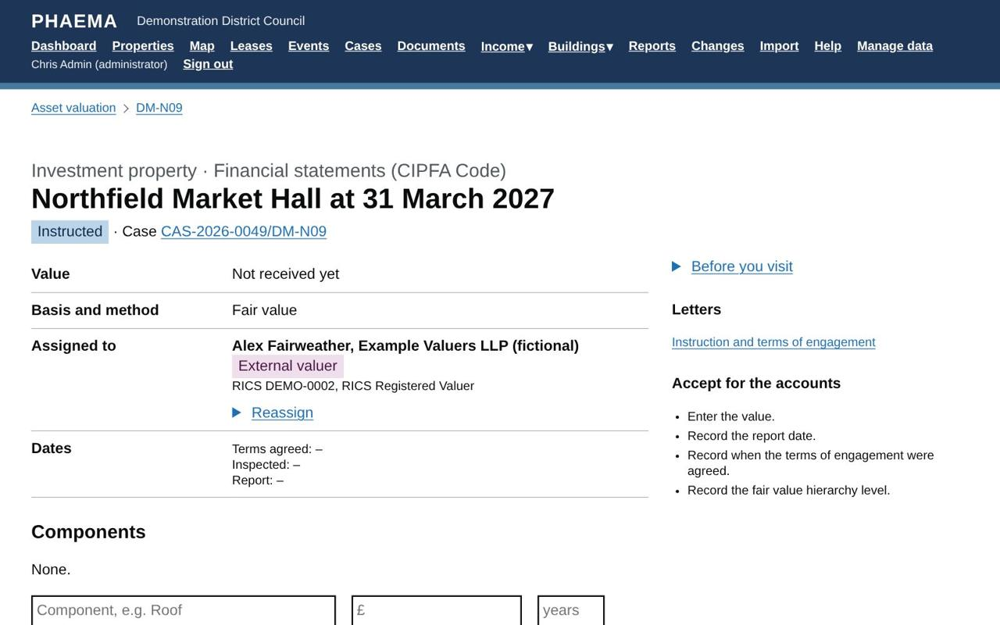
Assigning and recording
Assign each valuation to a member of staff or an external valuer; staff are emailed and see it on their dashboard. Record the basis, method, purpose, terms of engagement date, valuation and report dates, inspection and its extent, assumptions, any material uncertainty, the valuer's status and RICS number, conflicts declared, the fair value level for fair value, the value split into land and buildings, remaining life, components and the report. Values can also be imported from the valuer's returned figures.
Accepting for the accounts
An administrator selects Accept once the valuation is complete. PHAEMA will not accept a valuation without its essentials, or a building over the componentisation threshold without components. Accepted valuations are locked.
Audit
Flag for audit with the reason, the auditor, their query and the response date.
Record the response sent to the auditor, with any evidence.
Close with the outcome: no change, amended, accounts adjusted, or other.
The Audit page lists every flagged valuation and downloads the log for the auditor.
Impairment and indexation
PHAEMA prompts an impairment review after a change of occupation or purpose, a lease ending, an emergency repair or a component graded D. Between full valuations it applies each class's index to bring the last value forward to the year end (to the buildings only when land and buildings are split). The Year-end schedule for finance gives every asset's value, valuer, fair value level and indexed value.
Worked example
This year, the water tower telecoms site (DM-N07) and Hilltop Farm (DM-N10) are assigned to Lena Chen as a council staff valuer; the rest of Northfield goes to the external valuer. Last year's valuation of Northfield Market Hall is flagged for audit: the auditor asked about the turnover rent assumption and the yield, and Rob Baker is preparing the response.
14. Reports, data in and out, and the change log
Reports
Select Reports. Any report can be viewed on screen or downloaded to Excel or CSV, and always shows the data as it is now. Ready-made reports are grouped by topic: property and assets, leases and key dates, cases, rents and income, service charges, maintenance, compliance, asset valuation, contacts and data quality. Those for an optional module appear when it is on.
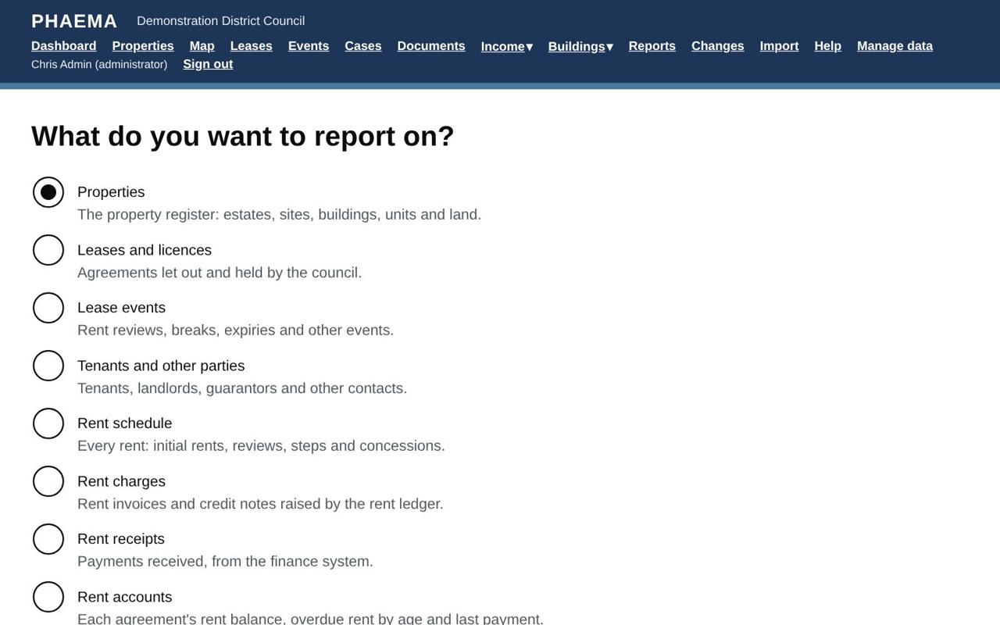
To build your own, select Make a new report, choose what to report on, then:
Columns: tick those you want, and number them to set the order.
Filters: lists of choices, text (or blank), at least and at most for money and areas, and dates in the next or last so many days. Relative dates move with time.
Sort by one column, largest or latest first if you want.
Show totals for money and area columns.
Select Save and run. Tick Share this report with everyone to let colleagues run and copy it; only you and administrators can change it.
Importing
Administrators select Import. Import in this order: properties, parties, leases and licences with their breaks, then Land Registry boundaries. Rent receipts, service charge spending, contractors and components, and the valuer's figures are imported the same way.
Download the Excel template, with drop-downs, an example row and a Guidance sheet.
Fill in one row per record.
Upload it and check the preview: what will be added, updated or unchanged.
If any row has a problem, nothing is imported; the preview lists each problem by sheet and row.
When the preview is clean, select Import these records.
Existing records are matched and updated; empty cells leave values unchanged. Change an existing agreement's rent on its rent schedule, never by import.
Exporting
Every list has Download Excel and Download CSV, with everything matching your filters, in your order. Downloaded files are outside PHAEMA's access controls: store and share them under the council's information governance rules.
The change log
Every addition, change and deletion is recorded with who, when and the old and new values, including imports (under the administrator who confirmed them) and automatic tasks (shown as System). The change log cannot be edited or deleted by anyone. Select Changes to see it, filter by person, open an entry for the detail, or download it.
15. Administration
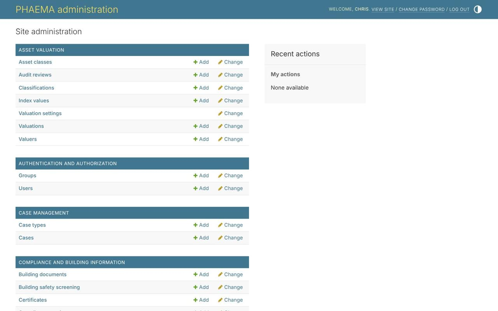
Users and roles
Everyone has a user account, one role and one or more access areas. The role decides what they can change; the access areas decide which optional modules they can open. Anyone with a role can see the core of PHAEMA (properties, leases, events, cases and documents), run reports and download lists.
| Administrator | Surveyor | Contributor | Viewer | |
|---|---|---|---|---|
| Start and work on cases | All | Own, or on properties they manage | No | No |
| Add notes, documents and emails to cases | All | As above | Cases they are added to | No |
| See confidential case notes | Yes | Cases they own | No | No |
| Change properties | All | Those they manage | No | No |
| Change leases, rents, breaks and events | All | On properties they manage | No | No |
| Change parties | Yes | Yes | No | No |
| Titles, boundaries, settings, imports, users | Yes | No | No | No |
To add a user: Manage data, Users, Add user. Set a username and starting password, then add their name and email (used for reminders) and choose one group: Administrators, Surveyors, Contributors or Viewers. To stop someone using PHAEMA, untick Active rather than deleting them, so their name stays on the records they changed. Hand their open work to colleagues first (see Handing over work, below), which can also switch off their sign-in in the same step.
Forgotten passwords. People reset their own password from Forgotten your password? on the sign-in page. PHAEMA emails a link, valid once and for one hour, to the address on their account, so each person needs a correct email address and PHAEMA needs its email service set up. The page never says whether an account was found, closed accounts are sent nothing, and a reset does not switch off two-step sign-in. Where PHAEMA cannot send email, the page tells the person to ask an administrator: set a new password for them in Manage data, Users.
People can sign in with their email address or their username. Give each person their own email address: if two accounts share one address, neither can sign in with it and both must use their usernames.
Two-step sign-in
Under Manage data, Module settings, choose who must use two-step sign-in: administrators (the default), everyone, or nobody (optional). Anyone can turn it on for their own account. The users list shows who has it. If someone loses their phone and their recovery codes, select them in the users list and choose Reset two-step sign-in; they set it up again at their next sign-in. It is never required on a public test site.
Single sign-on
People can sign in with their council account through Microsoft 365 (Entra ID) or another OpenID Connect service. Your IT team and the installer set it up first, following the single sign-on guide in the technical manual. Then, under Manage data, Module settings, Single sign-on:
| Setting | What it does |
|---|---|
| Sign in with the council's own accounts | Shows the button on the sign-in page. People are matched to their PHAEMA account by email address the first time they use it, so check each account has the person's work email address |
| Who can still sign in with a PHAEMA password | Only people without a council account, and administrators as a fallback (the default): once someone has used the button, their PHAEMA password stops working. Or anyone: both work. Administrators and the superuser can always use a PHAEMA password, in case the council's sign-in service is unavailable |
| Create a PHAEMA account at first council sign-in | Off: only people you have added can sign in. On: anyone the council's service lets through gets an account, but sees nothing until they have a role |
Roles from groups. Under Manage data, Sign-in group mappings, give everyone in one of the council's groups a role, an access area or both. PHAEMA applies this each time a person signs in: they gain what their groups give, and lose what groups they have left gave. Roles and access areas that no mapping mentions stay as you set them. Changes are in the change log.
Leavers. When IT closes a person's council account they can no longer sign in. Someone already signed in stays so until their session ends, so still use Hand over work to stop access at once and move their work. Close outside consultants' accounts in PHAEMA yourself when their work ends.
Unlinking. To connect a person to a different council account, open them in Manage data, Users, tick Delete in the Council sign-in box and save.
Test account requests
On a public test site, people ask for a sign-in from the sign-in page. Each request appears under Manage data, Test account requests. Select it and choose Approve as surveyor, Approve as administrator or Approve as viewer. PHAEMA creates the sign-in and emails the person their username and a one-time link to choose a password.
Portfolios
Manage data, Portfolios holds the list of portfolios a property can belong to. PHAEMA starts with twenty typical of a large council. Add, rename or reorder them, and untick Active to retire one without losing it from existing properties.
Supervisors
Each surveyor needs a supervisor and approver, set on their user record under Staff details, with a job title. The supervisor can be a surveyor or an administrator, but nobody approves their own work. The dashboard warns administrators about any surveyor without one.
Access areas
Access areas are named groups that open the optional modules. A person can be in several. Administrators can always open everything the council has switched on.
| Area | Opens | Typical people |
|---|---|---|
| Estates | Rent, arrears and service charges for their own patch | Surveyors, Head of Estates |
| Finance | Rent ledger, service charges and asset valuation, plus maintenance to read. Surveyors in Finance can raise rent, credit notes and finance exports, approve service charge budgets and import receipts | Finance officers |
| Maintenance and compliance | Maintenance and compliance | Building and facilities staff |
| Valuation | Asset valuation | Internal valuers |
| Legal | The core only; contributors work on the cases they are added to | The legal team |
Tick a person's areas on their user record, under Access areas. Change what an area opens under Manage data, Access areas. When access areas arrived, everyone was put in all five; narrow each person's access from there.
PHAEMA refuses a module someone's areas do not include, even if they type its address, and tells them to ask an administrator. Menus, dashboards, reports, the change log, Hand over work and works order approvals follow the same rules.
Their own patch. People in Estates see rent, arrears and service charges for the properties they manage, those of everyone below them in the supervision chain (the whole chain, so a director sees the Head of Estates' team as well), and anyone they are covering for. A lease over several properties appears for every surveyor whose patch includes one of them. Properties with no managing surveyor appear only to Finance and administrators.
Finance officers need the Surveyor role and the Finance area to raise rent and issue credit notes; they do not need to be administrators. Someone with the Viewer role in Finance can see the ledger but not change it.
Cover for absence
While someone is away, a colleague can cover their patch. Administrators can arrange cover for anyone, and supervisors for anyone in their chain: select Arrange cover for absence on My work. Choose who is away, who is covering, and the first and last days. The person covering sees the absent person's patch as their own until the end of the last day, then it stops by itself. End now stops it early and Cancel removes cover that has not started. Cover and area changes appear in the change log.
Worked example. Lena Chen is on leave for a fortnight. Her supervisor, Sam Hughes, arranges cover by Rob Baker until the day before she returns. Rob can now open Lena's tenants' rent accounts and arrears, and loses that access automatically when the cover ends. To move work for good instead, use Hand over work.
Handing over work
When someone leaves, changes job, or a new starter takes over part of a patch, an administrator moves their open work to colleagues in one step with Hand over work. Select it in the menu (it is also linked from the Role section of each user record), or go to /people/hand-over/.
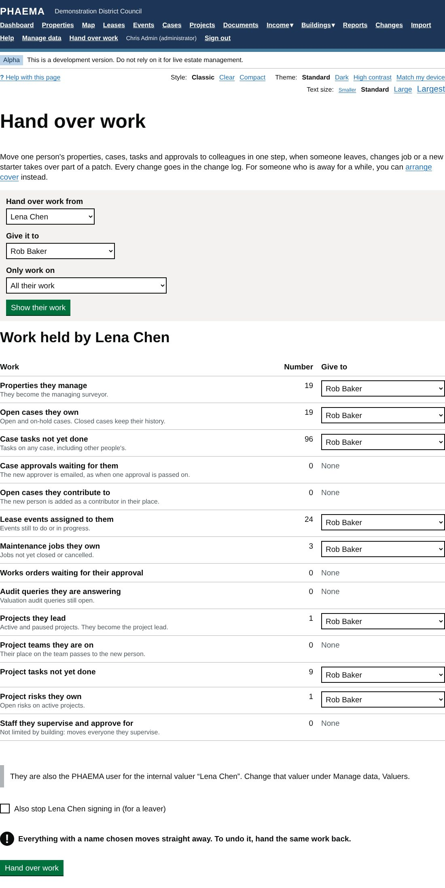
Choose Hand over work from and Give it to. To hand over only part of a patch, choose one estate, site or building under Only work on.
Select Show their work. PHAEMA counts what they hold.
For each kind of work, keep the person you chose, pick someone else, or choose Leave with to keep it where it is.
For a leaver, tick Also stop them signing in. Then select Hand over work.
| Work | What moves |
|---|---|
| Properties they manage | The new person becomes the managing surveyor |
| Open cases they own | Open and on-hold cases; closed cases keep the original owner |
| Case tasks not yet done | Their tasks on any open case |
| Case approvals waiting for them | The new approver is emailed |
| Open cases they contribute to | The new person is added as a contributor in their place |
| Lease events assigned to them | Events still to do or in progress |
| Maintenance jobs they own | Jobs not yet closed or cancelled |
| Works orders waiting for their approval | Pending approvals only |
| Audit queries they are answering | Open valuation audit queries |
| Projects they lead | Active and paused projects; the new person becomes the lead |
| Project teams they are on | Their place on the team passes to the new person (dropped if they are already on it) |
| Project tasks and risks | Open tasks and open risks on active and paused projects |
| Staff they supervise | Everyone they supervise (not limited by building) |
Work can only go to active surveyors and administrators; contributors can also take over case contributions. Every record moved appears in the change log under the administrator's name. There is no undo button: hand the same work back to reverse it. If the person is also an internal valuer, change the valuer record under Manage data, Valuers.
Worked example. Lena Chen holds 19 properties, 19 open cases, 96 case tasks, 24 lease events and 3 maintenance jobs in the demonstration data. Choosing Rob Baker under Give it to fills every row with his name; selecting Hand over work moves it all, and the change log lists each record.
Council settings
Under Manage data, Module settings:
| Setting | What it does |
|---|---|
| Organisation name and brand colour | Shown in the header |
| Modules | Rent ledger, service charges, maintenance, compliance, asset valuation. Data is kept when a module is switched off |
| Letters and notices | Department, address for service, phone and email on letters |
| Publish open data | Publishes the Transparency Code list and available property |
| Works orders needing approval | The approval limit for works orders |
| OS Maps API key | Turns on Ordnance Survey base maps |
| Reminder timings | Days before each kind of event to send reminders, and weekly overdue reminders |
| Rent ledger settings | Who raises invoices, invoice numbering, VAT rate and codes, income codes |
Case types set each type's targets, tasks, fee and which stages need approval. Asset classes, valuers, compliance types, cost headings and document templates are also under Manage data.
Site visit sheets. Each case type has its own site visit sheet, changed on the case type's page (or select Change this sheet for all cases of this type on any sheet). Under Property information on the site visit sheet, tick the parts of the property record to print: key facts, location, description and construction, services, parking, floor areas, floor plans, titles, the tenancy summary, the main terms of each agreement, and other open cases. The case details and Before you visit are always printed. Under Site visit checklist, add, reword, reorder or remove items:
| Setting | What it does |
|---|---|
| Order | Items are printed lowest first |
| Heading | Items with the same heading are printed together, such as Outside or Inside |
| Item | What to check or record |
| Guidance | A short prompt printed under the item |
| Answer | Tick when checked, yes or no, a written answer, a number or measurement, or one of a list |
| List to choose from | For "one of a list": the choices, separated by commas, such as Good, Fair, Poor, Bad |
| Checks the recorded | A detail of the property record to print beside the item: occupation, use, description, when built, construction, storeys, roof, windows, parking, services, solar panels, floor areas, site area or site hazards |
| For each building | On a site with several buildings, repeat the item under each one |
PHAEMA comes with starting checklists for valuations, lease events, consents, dilapidations and breaches, and land enquiries. They are a starting point: review them against your own inspection standards. Case types that do not involve a visit, such as arrears, have none, and a case type you add yourself starts without one. Your changes are kept when PHAEMA is updated.
Data and hosting
PHAEMA is designed to be hosted in the UK or EU, by the council or a provider. The data belongs to the council. Photos have their location data removed, and documents can only be opened by signed-in users.
16. Quick reference by role
Estates surveyor
| To | Go to |
|---|---|
| See what needs doing today | Dashboard, My work, Needs attention now |
| Record a rent review | Events, the review, Record the outcome |
| Start a consent case | The agreement, Start a case |
| Ask for approval | The case, Conflicts of interest, then Ask for approval |
| Fill in heads of terms | The new letting or renewal case, Heads of terms |
| Record a section 25 or 26 notice | The renewal case, Record a notice |
| Write a letter or notice | The case, Create a letter or notice |
| File an email on a case | The case, File an email |
| Get my events in Outlook | Events, Calendar |
| Start a project | Projects, Start a project |
| Record a gateway decision | The project page, Gateways, Record gateway |
| Finish a project's register changes | The project page, Completion checklist |
Finance officer
| To | Go to |
|---|---|
| Raise the quarter's rent | Income, Rents, Raise rent |
| Import receipts | Income, Rents, Import receipts |
| See arrears | Income, Rents, Arrears |
| Credit a charge | The tenant's rent account, Credit this charge |
| Send charges to finance | Income, Rents, Finance exports |
| Approve a service charge budget | Income, Service charges, the year, Approve the budget |
| Reconcile a service charge year | The year, Reconcile the year |
| Accept a valuation | Buildings, Asset valuation, the valuation, Accept |
| Answer an audit query | The valuation, Record the response sent to the auditor |
| Year-end schedule | Buildings, Asset valuation, Year-end schedule for finance |
Maintenance and compliance
| To | Go to |
|---|---|
| Report a repair | Buildings, Maintenance, Report a repair |
| Issue a works order | The job, Contractor, estimate and order number, Issue the works order |
| Approve an order | Dashboard, works orders waiting for your approval |
| Recharge a tenant | The completed job, Recharge the cost |
| Add statutory tasks | The property's maintenance page, Add tasks from the library |
| Record a certificate | The property's compliance page, Record a certificate |
| Screen a building's tier | The property's compliance page, Screen this building |
| Add a new version of a plan | The property's compliance page, Add a document or a new version |
System administrator
| To | Go to |
|---|---|
| Add a user and role | Manage data, Users, Add user |
| Set a supervisor | The user record, Staff details |
| Hand over a leaver's work | The user record, Hand over work |
| Switch a module on | Manage data, Module settings |
| Change approval stages | Manage data, Case types |
| Import properties or leases | Import |
| Reassign a waiting approval | The case, Send to someone else |
| See who changed something | Changes |
Viewer and contributor
| To | Go to |
|---|---|
| Find a property | Properties, search |
| Download a list | Download Excel above any list |
| Run a report | Reports |
| Add to a case (contributors) | The case, Add a note, File an email or Add a document |
17. Glossary
| Term | Meaning |
|---|---|
| 1954 Act | The Landlord and Tenant Act 1954, Part II. Business tenants inside the Act have a right to renew; a lease can be contracted out by a set procedure before it is granted |
| Agreement for lease | A contract to grant a lease in the future |
| Apportionment | Charging part of a period's rent by the day when an agreement starts or ends part way through |
| Arrears | Rent overdue: the due date has passed and it has not been paid or credited |
| Break option | A right to end a lease early on a set date, usually by notice by a deadline |
| CIPFA Code | The Code of Practice on Local Authority Accounting, which sets how assets are valued in the accounts |
| DRC | Depreciated replacement cost, used to value specialised buildings |
| EPC and DEC | Energy Performance Certificate, and Display Energy Certificate for public buildings |
| Fair value level | The IFRS 13 hierarchy (1, 2 or 3) showing how observable a valuation's inputs are |
| FRI | Full repairing and insuring: the tenant pays for all repairs and insurance |
| GIA and NIA | Gross internal area (inside the external walls) and net internal area (usable space) |
| Gateway | A decision point between a project's phases, such as approval to proceed by Cabinet. A project moves on only when the decision is recorded. |
| Golden Thread | Accurate, up-to-date building information; statutory for higher-risk buildings |
| Holding over | A tenant staying after the term end, often while a renewal is agreed |
| INSPIRE Index Polygons | HM Land Registry's free boundaries of registered freehold titles |
| Licence | Permission to use property without a lease or security of tenure |
| MEES | Minimum energy efficiency standards: no new lettings below EPC band E without an exemption |
| Option to tax | A landlord's choice to charge VAT on commercial rent |
| Peppercorn rent | A nominal rent, often nothing at all |
| Prescribed form | A notice whose wording is set by law and must be used |
| Project | A larger piece of work than a case, such as a development, acquisition or disposal, with a team, gateways, milestones, a budget and risks. |
| Quarter days | 25 March, 24 June, 29 September and 25 December |
| Red Book | RICS Valuation – Global Standards |
| Rent review | A point where the rent is reassessed; upwards only means it cannot fall |
| Rent roll | Total rent receivable from current lettings |
| Service charge | A tenant's share of shared costs, paid on account and balanced after the year end |
| Terrier | A council's register of the land and property it owns |
| UPRN and USRN | National identifiers for every addressable place and every street |
| Void share | The service charge share of empty units, paid by the landlord |
| WAULT | Weighted average unexpired lease term, weighted by rent |
| Wayleave | Permission, usually paid, for a utility to run cables or pipes across land |
PHAEMA is free software under the GNU Affero General Public License v3.0. Screenshots show fictional demonstration data. Questions or corrections: stuart@phaema.co.uk.